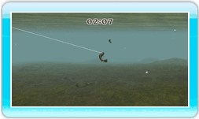

14 |
Luchar |
 |
|

Una vez que has enganchado un pez, ¡hay que luchar a brazo partido! Los peces realizan 3 acciones durante este forcejeo:
Reposo: cuando el pez está descansando, se mueve y nada a un ritmo lento. Esta es tu oportunidad para atraerlo hacia ti, ¡así que recoge el sedal lo más rápido posible! Pero asegúrate de mantener el mando de Wii horizontal cuando lo hagas porque, si lo levantas, ejercerás una mayor presión sobre el sedal ¡y acabará por romperse!
Forcejeo: cuando el pez empiece a forcejear, sentirás una vibración palpitante en el mando de Wii mientras el pez se menea con furor. Cuando esto suceda, deja de recoger el sedal y mantén erguido el mando de Wii. Sobre todo, no recojas el sedal mientras tengas el mando de Wii en posición vertical, porque la tensión repentina rompería el sedal. Asegúrate también de no poner el mando de Wii en posición horizontal, ya que el sedal se aflojaría y el anzuelo se saldría.
Huida: cuando un pez huya, sentirás una vibración breve pero constante en el mando de Wii y se alejará nadando rápidamente. Cuando esto suceda, pon el mando de Wii en posición horizontal y enrolla el sedal a toda pastilla. Esto impedirá que el pez ejerza demasiada presión sobre el sedal hasta romperlo. Asegúrate de no alzar el mando de Wii al recoger el sedal, ya que ese exceso de tensión rompería el sedal. |
 |
 |
 |